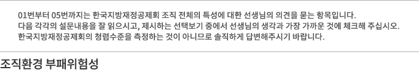

설문진행률0%


(권한의 크기) 다른 공공기관과 비교했을 때, 한국지방재정공제회가 얼마나 큰
권한을
가지고
있다고 생각하십니까?
| 권한이 전혀 없다 |
권한이 거의 없다 |
권한이 별로 없다 |
보통 | 권한이 약간 크다 |
권한이 상당히 크다 |
권한이 매우 크다 |
|---|---|---|---|---|---|---|
(의사결정 과정의 공정성) 한국지방재정공제회가 정책이나 사업을 추진하는 과정에서
이해관계자 의견을 수렴하는 절차가 실질적으로 보장된다고 생각하십니까?
| 전혀 그렇지 않다 | 거의 그렇지 않다 | 별로 그렇지 않다 | 보통 | 약간 그렇다 | 상당히 그렇다 | 매우 그렇다 |
|---|---|---|---|---|---|---|
(연고주의) 한국지방재정공제회 구성원들이 업무를 추진하는 과정이나 조직 내부의 인사 등
의사결정 과정에서 학연, 지연, 혈연, 종교 등 연고가 얼마나 영향을 미친다고 생각하십니까?
| 전혀 영향을 미치지 않는다 |
거의 영향을 미치지 않는다 |
별로 영향을 미치지 않는다 |
보통 | 약간 영향을 미친다 |
상당한 영향을 미친다 |
매우 큰 영향을 미친다 |
|---|---|---|---|---|---|---|
(퇴직자 재취업) 한국지방재정공제회 퇴직자들이 업무 관련 공공기관이나 민간기업에
재취업하는 경우가 얼마나 있다고 생각하십니까?
| 재취업하는 경우가 전혀 없다 |
재취업하는 경우가 거의 없다 |
재취업하는 경우가 별로 없다 |
보통 | 재취업하는 경우가 약간 많다 |
재취업하는 경우가 상당히 많다 |
재취업하는 경우가 매우 많다 |
|---|---|---|---|---|---|---|